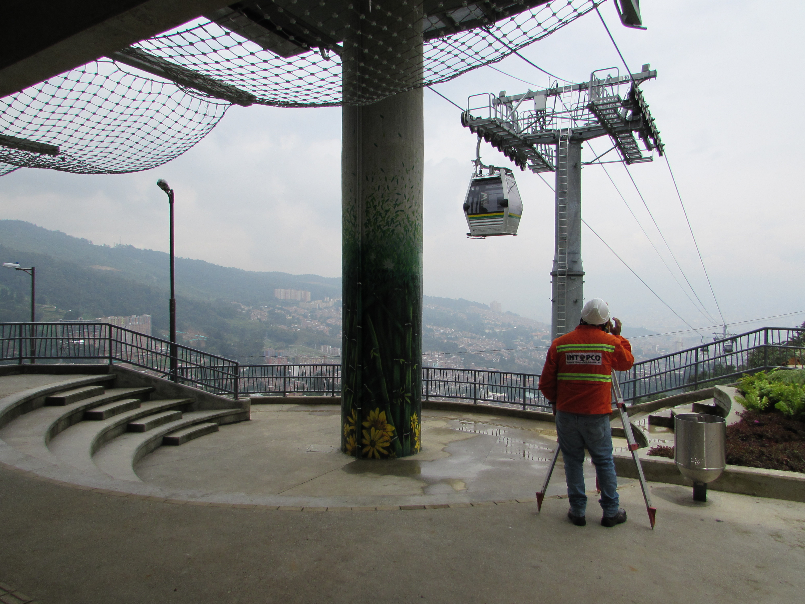

<div class="grid animated fadeIn">
    <figure class="effect-ming">
        
        <figcaption>
            <h2>METRO CABLE PICACHO - PORTICOS S.A.</h2>
            <p>Levantamiento topográficos, localización a nivel de detalle, replanteo y nivelación en las diferentes estructuras que componen la obra del sistema del cable áereo denominado "Metro cable picacho" en las comunas 5 y 6 de Medellín.</p>
            <a href="#">View more</a>
        </figcaption>
    </figure>
</div>